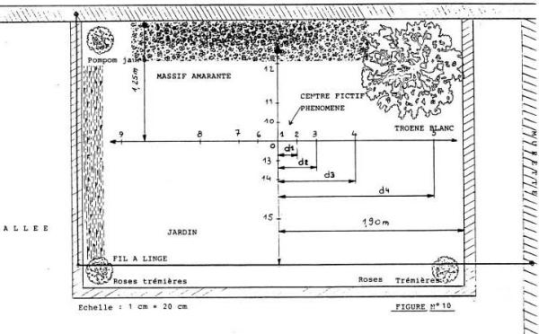
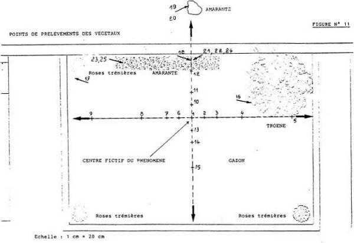

Le volet de l'enquête menée par le GEPAN relatif aux effets et traces physiques éventuelles, comprenait une partie de
collecte d'échantillons de végétaux. Ces échantillons ont fait l'objet de deux types de prélèvements :
Prélèvements en rapport avec les effets mécaniques constatés sur la surface du jardin engazonnée
Prélèvements sur les massifs floraux.
Prélèvements en rapport avec les comportements mécaniques constatés sur la surface engazonnée du jardin
Ces prélèvements ont été réalisés le 29 octobre 1982 à 14 heures, selon la méthode suivante à partir d'un centre O
selon 4 axes orthogonaux en progression géométrique de 20 cm à 160 cm, soit 15 prélèvements (voir figure 10).
Les échantillons d'herbe sont conditionnés dans des sachets plastiques étanches numérotés.
DISTANCE
N° DE PRÉLÈVEMENT
20 cm
2 - 6 - 10 - 13 -
40 cm
3 - 7 - 11 - 14 -
80 cm
4 - 8 - 12 - 15 -
160 cm
5 - 9 -
TABLEAU DES DISTANCES AU CENTRE (Prélèvements n°2 à 15)
Collecte des autres types de végétaux

Figure 8
La collecte et le conditionnement sont réalisés dans les mêmes conditions :
choix du type de prélèvement (branches, feuilles, herbe etc...)
Prélèvement par sectionnement (ciseau, scalpel)
Conditionnement par ensachage (sac plastique étanche, fermé, scellé).

Figure 8
POSITION DES PRÉLÈVEMENTS (voir figure 11)
N° 16 -- Branche de troène argenté, arbuste le plus grand du jardin.
N° 17 -- Branche et feuilles de pompon jaune, arbuste.
N° 18 -- Branche feuilles et fleurs d'amarante. Pied arraché par le témoin quelques jours avant notre
arrivée.
N° 19 et 20 -- Branche d'amarante. Prélevée dans le petit chemin qui longe le jardin. ( Ces plants sont beaucoup
plus petits que ceux qui se trouvaient dans le jardin ).